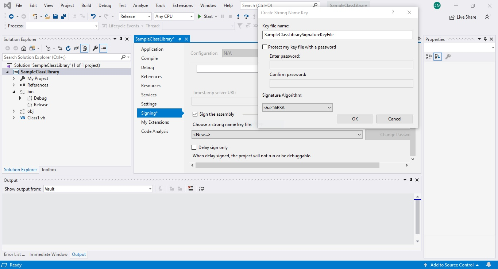
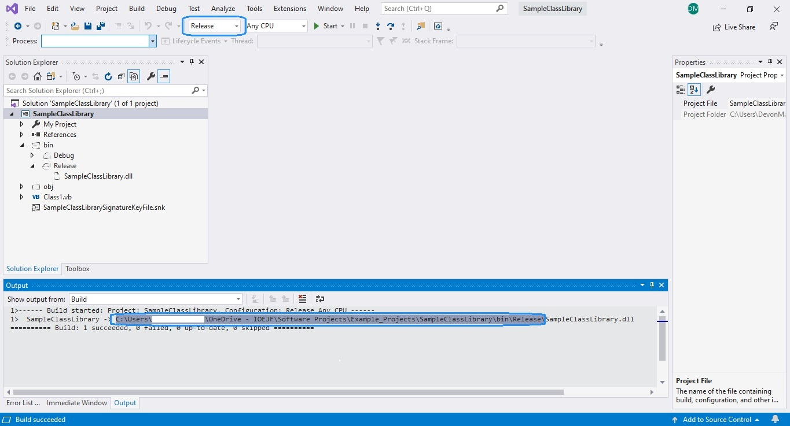
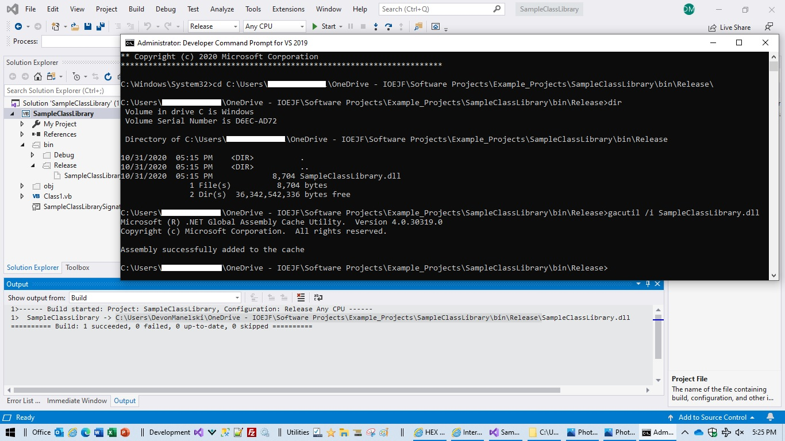
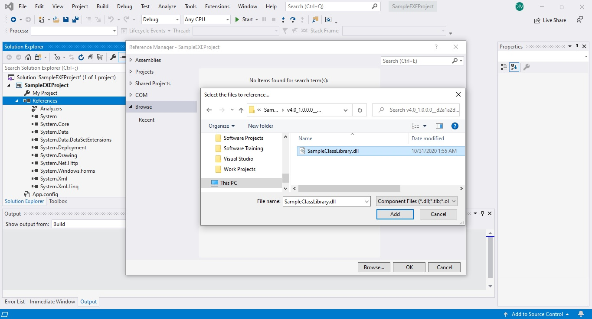
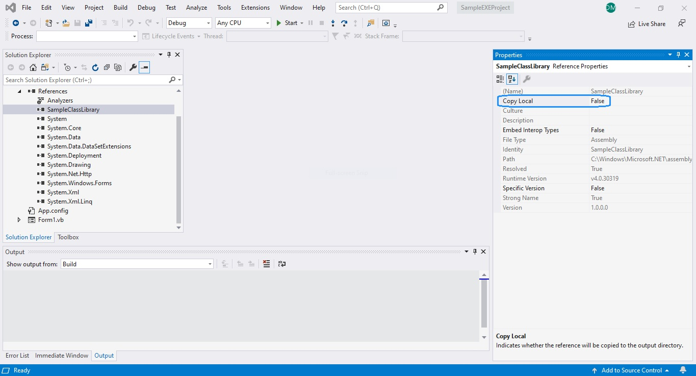

Summary
In order to share assemblies --i.e. a Dynamic Link Library-- across applications, the assembly must be registered with the Global Assembly Cache. The Global Assembly Cache is a machine-wide code cache that is installed with the Common Language Runtime.
Adding a DLL to the Global Assembly Cache
-
Sign the DLL in Project Properties.

- Delete the files in the bin/Release Folder of the project so that the folder is empty.
-
Compile the DLL in Release Mode.

- Open Developer Command Prompt for Visual Studio using Run As Administrator.
-
Navigate to the bin/Release directory where the newly
compiled DLL is located, and run the gacutil install
command on the DLL.

- Verify that the DLL is now installed in the Global Assembly Cache by going to C:\Windows\Microsoft.NET\assembly\GAC_MSIL\SampleClassLibrary and finding the DLL in the folder that has the Assembly Version Number in it, i.e. C:\Windows\Microsoft.NET\assembly\GAC_MSIL\SampleClassLibrary\v4.0_1.0.0.0__d2a1a2dfb0150482\SampleClassLibrary.dll.
-
Open an EXE Project and add the DLL Reference to the
EXE.

-
Set the Copy Local Property of the DLL to False.

- The SampleClassLibrary DLL can now be used in the SampleEXEProject Application.
- To Add the SampleClassLibrary DLL to other applications, add the DLL Reference and set the Copy Local Property to False.
- Be sure to increment the Assembly Version Number when changes are made to the SampleClassLibrary DLL.
- DLL's can be removed from the Global Assembly Cache by running the gacutil /u command, i.e. gacutil /u SampleClassLibrary. This command will uninstall all of the versions of the DLL from the Global Assembly Cache.
{kind=link}
{kind=link}
{kind=link}
{kind=link}
{kind=link}